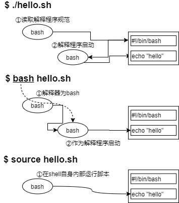

5.1 如何运行shell脚本¶
什么是shell脚本¶
shell脚本是一个程序（脚本），它使用OS shell来执行多项操作。通过在shell脚本中编写复杂的条件或复杂的重复操作，可以简化用户的操作。
shell脚本具有以下特征：
解释型语言
解释器解释并执行脚本。在第一行中定义要执行的解释器。您编写的脚本可以由解释器进行解释和执行，而无需进行编译。
批处理功能
您可以将终端上手动输入的一组命令写入shell脚本，然后批量执行这些命令。
易于调试
shell脚本是一种解释程序语言，允许您编辑程序以进行运行和验证，且允许使用“-e”和“-x”选项进行调试。
作为编程语言的功能
shell脚本提供了一种编程语言，例如变量和数组，条件分支和迭代等控制语法和函数定义，可以帮助您更有效的编写操作。
注解
本文档不包含shell脚本语言。只介绍如何运行提供的脚本。
Shebang¶
在计算领域中，Shebang（也称为Hashbang）是一个由井号和叹号构成的字符序列#!，其出现在文本文件的第一行的前两个字符。 在文件中存在Shebang的情况下，类Unix操作系统的程序加载器会分析Shebang后的内容，将这些内容作为解释器指令，并调用该指令，并将载有Shebang的文件路径作为该解释器的参数。
例如，以指令 #!/bin/sh 开头的文件在执行时会实际调用 /bin/sh 程序（通常是Bourne shell或兼容的shell，例如bash、dash等）来执行。这行内容也是shell脚本的标准起始行。
Shebang |
执行解释程序 |
|---|---|
#!/bin/sh |
Bourne壳 |
#!/bin/bash |
bash（Bourne Again Shell） |
#!/usr/bin/perl |
Perl语言 |
#!/usr/bin/python |
Python语言 |
运行shell脚本¶
shell脚本由三种执行方式（四种表示方法）。运行结果保持不变，但在当前shell或子shell上运行或读取Shebang上存在差异。在子shell中运行意味着另一个shell将启动并在另一个进程中运行。
No |
启动类型 |
执行示例 |
补充说明 |
|---|---|---|---|
① |
./shell脚本 |
|
读取Shebang并在子shell中启动解释器 |
脚本文件必须具有执行权限 |
|||
② |
bash shell脚本 |
|
bash命令在子shell中作为解释器启动并运行脚本 |
因此，它不读取Shebang |
|||
脚本文件不需要执行权限 |
|||
③ |
. shell脚本 |
|
当前shell运行脚本 |
因此，它不读取Shebang |
|||
脚本文件不需要执行权限 |
|||
④ |
source shell脚本 |
|
与“. Shell脚本”方式等同 |
例如，如果编写了一个使用export命令设置环境变量的脚本，则上表的运行方式②会将环境变量设置为子shell环境的环境变量，并在子shell结束时（脚本结束时）将其删除。如果要将其设置为当前命令提示符下的环境变量，请使用③和④的方式。
脚本文件权限¶
检查并修改解脚本文件权限，使shell脚本可以执行。
权限设置
要确保运行的用户具有读取权限。此外，您还可以使用上表中的方式①直接运行脚本。
扩展名称
可选，通常使用“.sh”来表示shell脚本。
如第二章所述，Linux使用各种命令和shell脚本。在本节中，您将使用自己的shell脚本来确定如何执行该脚本。请注意，以下shell脚本文件保存在user01的起始目录 /home/user01 中并运行。
以下shell脚本“hello.sh”将字符串显示在显示器上：第一行是Shebang的定义，第三行是注释行。第四行echo命令在显示器上显示指定的字符串或变量值。
$ cat hello.sh
#!/bin/bash
# 注释行示例
echo 'hello world.'
以下示例说明如何执行上述shell脚本“hello.sh”。
$ chmod a+x hello.sh
$ ./hello.sh
hello world.
$ bash hello.sh
hello world.
$ . hello.sh
hello world.
$ source hello.sh
hello world.
运行时选项和参数（特殊变量）¶
使用bash命令读取和运行脚本时，可以指定选项。用于设置或调试是否加载配置文件。主要选项包括：
选项 |
说明 |
|---|---|
–norc |
不加载用户的配置文件 |
–rcfile 文件名称 |
将指定的文件作为配置文件，而不加载用户配置文件 |
-n |
检查语法错误 |
-e |
如果脚本遇到运行时错误，则返回错误内容并停止处理 |
-x |
在命令行中显示shell脚本执行的每一步操作。显示运行时的错误。 |
指定选项后，此选项才可用。使用bash命令为bash shell指定选项。
$ cat opthin.sh
#!/bin/bash
echo 'script started.' # 用于标准输出的命令
foo # 因为不存在这样的命令，所以这里在运行时就出错了
date # 用于显示日期的命令
echo 'script was done'
以下示例显示了不带选项的bash命令的结果。虽然出现了错误，但您可以看到它一直运行到最后。
$ bash option.sh
script started.
option.sh: line 4: foo: command not found
Mon Mar 2 13:29:49 CST 2020
script was done
以下示例使用“-e”选项执行。在第四行中，您会看到脚本已经停止，出现错误。
$ bash -e option.sh
script started.
option.sh: line 4: foo: command not found
以下示例中使用“-x”选项执行。显示每个步骤的结果。步骤活动显示为活动。您还可以看到，即使出现了错误也会继续。
$ bash -x option.sh
+ echo 'script started.'
script started.
+ foo
option.sh: line 4: foo: command not found
+ date
Mon Mar 2 13:32:18 CST 2020
+ echo 'script was done'
script was done
参数和特殊变量¶
shell脚本参数存储在shell脚本的特殊变量中。特殊变量存储参数信息，执行结果或进程号。“$0”和“$1”等是特殊变量。“$0”表示运行中的文件名称，“$1” 和更大数值的参数表示运行时的参数。
特殊参数 |
说明 |
|---|---|
$0 |
shell脚本文件名称 |
$1~$n |
$1是第一个参数、$2是第二个参数、$n是第n个参数 |
$# |
存储参数数量 |
$* |
将所有非$0的参数存储为一个字符串 |
$? |
退出状态。shell脚本成功时存储为“0”，失败时存储为“1” |
$$ |
存储运行时的进程号（PID） |
以下示例使用两个参数运行shell脚本args.sh以显示特殊变量：
$ cat args.sh
#!/bin/bash
echo "文件名称：$0"
echo "第一个参数：$1"
echo "第二个参数：$2"
echo "参数数量：$#"
echo "全部参数：$*"
echo "结束返回值：$?"
echo "进程编号：$$"
$ bash args.sh hello bye
文件名称：args.sh
第一个参数：hello
第二个参数：bye
参数数量：2
全部参数：hello bye
结束返回值：0
进程编号：3420